คู่มือส่งมอบ · ฉบับตรวจหลักฐานSWING RIGHTS
เล่ม 3
การเก็บข้อมูล ความลับ และกฎหมาย
ผู้รับมอบ: อ๋อ
วันที่ข้อมูลและถ่ายภาพ: 20 ตุลาคม 2569 (20 ตุลาคม 2026)
ภาพหน้าจอในคู่มือนี้ใช้ข้อมูลจำลอง ณ วันที่ 20 ตุลาคม 2569 (20 ตุลาคม 2026)
ภายในองค์กร ห้ามเผยแพร่สาธารณะ
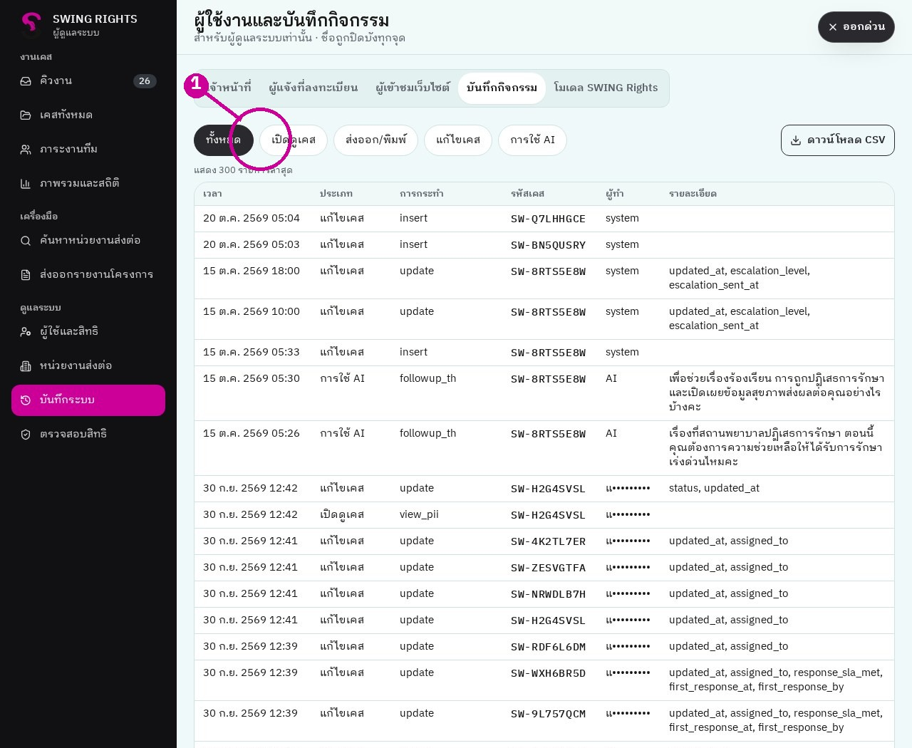
หน้า: บันทึกกิจกรรม · 1280px · ถ่าย 20 ตุลาคม 2569 (20 ตุลาคม 2026)
URL: https://swingrights.app/admin/systemขั้นที่ 1: เปิดเว็บจริงเพื่อตรวจหน้าที่ใช้ส่งมอบ
เอกสารจากโค้ด ฐานข้อมูล และเว็บจริง ไม่แก้แอปหรือการตั้งค่า ส่วนที่ยังไม่มีหลักฐานระบุ [ต้องยืนยัน] ไม่ใช้ภาพสร้างแทนหน้าจอ
SWING RIGHTS · สารบัญ
สารบัญ
1. บัญชีข้อมูลหลักและที่มาจากหน้าจอ · หน้า 3
2. ข้อมูลสนทนา ประวัติ และแบบร่าง · หน้า 4
3. ข้อมูลบัญชีและหน่วยงาน · หน้า 5
4. ข้อมูล AI สถิติเข้าเว็บ และตรวจสิทธิ์ · หน้า 6
5. ใครเห็นข้อมูลได้ · หน้า 7
6. ที่เก็บเสียง รูป และลิงก์ชั่วคราว · หน้า 8
7. งานที่ทำตามเวลาและผลการรัน · หน้า 9
8. บันทึกการเข้าถึงและความครบถ้วน · หน้า 10
9. อะไรลดออกก่อนส่ง AI · หน้า 11
10. ความยินยอม AI ที่ต้องตรวจเป็นพิเศษ · หน้า 12
11. ลบ เก็บรักษา และสำรอง · หน้า 13
12. ความเสี่ยงสาธารณะและอุปกรณ์ · หน้า 14
13. ความเสี่ยงหน่วยงานและขนาดรูป · หน้า 15
14. ความเสี่ยงโมเดลและความต่างเวอร์ชัน · หน้า 16
15. กฎหมาย 1/5, ข้อมูลอ่อนไหวและยินยอม · หน้า 17
16. กฎหมาย 2/5, คำขอสิทธิของเจ้าของข้อมูล · หน้า 18
17. กฎหมาย 3/5, เมื่อข้อมูลรั่ว · หน้า 19
18. กฎหมาย 4/5, งานบริการ สาร และคำขอรัฐ · หน้า 20
19. กฎหมาย 5/5, กฎใช้งานและก่อนรับมอบ · หน้า 21
หน้า: บันทึกกิจกรรม · 1280px · ถ่าย 20 ตุลาคม 2569 (20 ตุลาคม 2026)
URL: https://swingrights.app/admin/systemขั้นที่ 1: ใช้เมนูจริงเทียบกับบทที่ต้องการ
ภาพหนึ่งภาพต่อจุดที่ตรวจได้ ภาพผลที่ต้องเปลี่ยนบัญชี ส่งเคส หรือเปิดฟีเจอร์ยัง [ต้องยืนยัน] ไม่มีการจำลองผลลัพธ์
SWING RIGHTS · เล่ม 3
1. บัญชีข้อมูลหลักและที่มาจากหน้าจอ
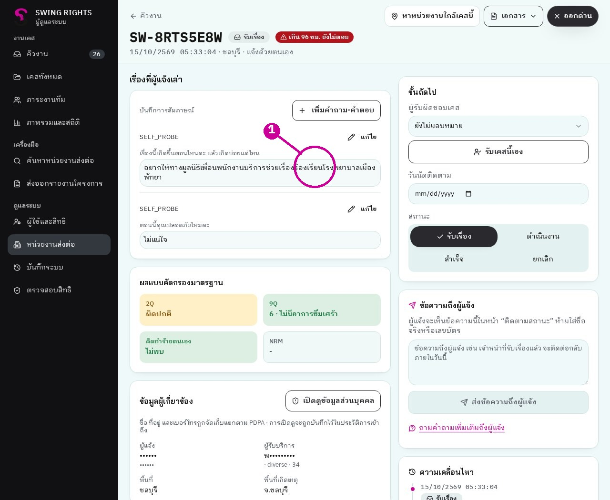
หน้า: รายละเอียดเคส · 1280px · ถ่าย 20 ตุลาคม 2569 (20 ตุลาคม 2026)
URL: https://swingrights.app/admin/case/399cce68-782d-4d03-a023-bc72d15d2a52ขั้นที่ 1: เปิดเคสเพื่อดูว่าข้อมูลที่กรอกไปปรากฏส่วนใด
- ฐานข้อมูลคือที่เก็บข้อมูลเป็นตาราง; cases เก็บเรื่อง สถานะ คำตอบ พื้นที่ ผลคัดกรอง และการอ้างถึงไฟล์ ประมาณ 30 แถวจากสถิติฐานข้อมูล ไม่ใช่จำนวนเคสที่ยังเปิด
- case_pii แยกข้อมูลระบุตัวตน ประมาณ 21 แถว แต่ cases ยังมีข้อมูลประกอบและคำตอบที่อาจระบุตัวตนทางอ้อม จึงไม่ควรเรียกว่าไม่มีข้อมูลส่วนบุคคลเลย
- ข้อมูลมาจาก /report และ /intake; สถานะ นัด และผู้รับผิดชอบมาจากงานเจ้าหน้าที่
หลักฐาน: pg_stat_user_tables 20/10/2026; get_case_pii; submit_case
SWING RIGHTS · เล่ม 3
2. ข้อมูลสนทนา ประวัติ และแบบร่าง
หน้า: บันทึกกิจกรรม · 1280px · ถ่าย 20 ตุลาคม 2569 (20 ตุลาคม 2026)
URL: https://swingrights.app/admin/systemขั้นที่ 1: เปิด “บันทึกกิจกรรม” เพื่อโยงการทำงานกับบันทึกที่เก็บ
- case_timeline 40: ลำดับเหตุการณ์; case_questions 0: คำถามและคำตอบ; case_drafts 3: แบบร่าง; case_answer_revisions 0: ประวัติแก้คำตอบ
- case_access_log 65: เปิดดู; case_exports 20: ส่งออก; case_audit 169: เปลี่ยนเคส; case_alerts 62: แจ้งเตือน
- จำนวนนี้เป็นค่าประมาณจากสถิติที่อาจล้าหลัง ไม่ใช้ตัดสินว่ามีการละเมิดหรือไม่มีข้อมูล ต้องอ่านรายการที่เกี่ยวข้องแบบจำกัดขอบเขต
หลักฐาน: pg_stat_user_tables 20/10/2026; src/pages/AdminSystem.tsx
SWING RIGHTS · เล่ม 3
3. ข้อมูลบัญชีและหน่วยงาน
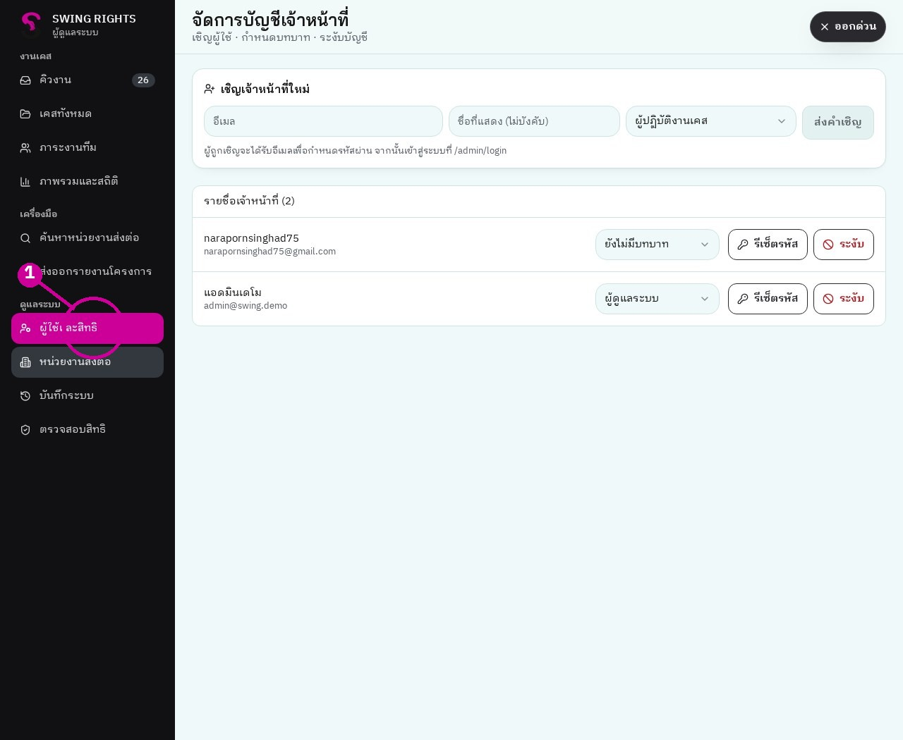
หน้า: users · 1280px · ถ่าย 20 ตุลาคม 2569 (20 ตุลาคม 2026)
URL: https://swingrights.app/admin/usersขั้นที่ 1: เปิด “รายชื่อเจ้าหน้าที่” จะเห็นข้อมูลที่มาจากบัญชีและบทบาท
- staff_profiles 2: โปรไฟล์เจ้าหน้าที่; user_roles สถิติประมาณ 0 แต่คิวรีจริงพบ admin 1 บทบาท แสดงว่าสถิติประมาณอาจไม่ตรงจำนวนจริง
- client_profiles 1: โปรไฟล์ผู้แจ้ง; client_cases 2: เคสที่เชื่อมบัญชี; referral_partners 71: หน่วยงาน; case_referrals 7: รายการส่งต่อ
- โปรไฟล์ผู้แจ้งมีชื่อ เบอร์ ที่อยู่ พิกัด และผู้ติดต่อฉุกเฉินได้ ไม่ใช่ข้อมูลที่แยกอยู่ใน case_pii ทั้งหมด
หลักฐาน: pg_stat_user_tables; SELECT staff_profiles+user_roles; schema client_profiles
SWING RIGHTS · เล่ม 3
4. ข้อมูล AI สถิติเข้าเว็บ และตรวจสิทธิ์
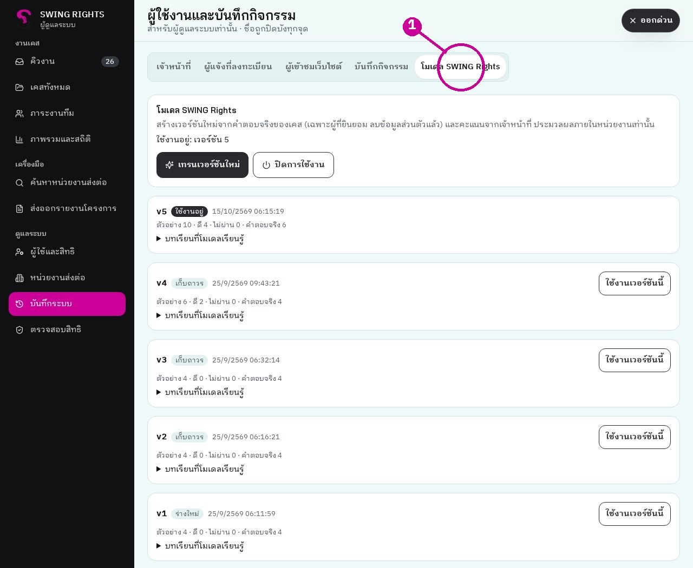
หน้า: โมเดล SWING Rights · 1280px · ถ่าย 20 ตุลาคม 2569 (20 ตุลาคม 2026)
URL: https://swingrights.app/admin/systemขั้นที่ 1: เปิดแท็บโมเดล จะเห็นเวอร์ชันและจำนวนตัวอย่าง
- ai_training_samples 40: ตัวอย่างคำถาม/คำตอบ; swing_rights_models 5: เวอร์ชันแนวทาง; access_reviews 0: การทบทวนสิทธิ์
- site_visits 889: สถิติเข้าเว็บ; rate_limits 7: บันทึกใช้จำกัดจำนวนครั้งเรียก ไม่ใช่รายชื่อผู้รับบริการ
- ก่อนใช้ตัวอย่าง AI ต้องตรวจความยินยอมและการลดข้อมูล ไม่รับรองการไม่ระบุตัวตนเพียงจากชื่อแท็บ
หลักฐาน: pg_stat_user_tables; train-swing-model/index.ts
SWING RIGHTS · เล่ม 3
5. ใครเห็นข้อมูลได้
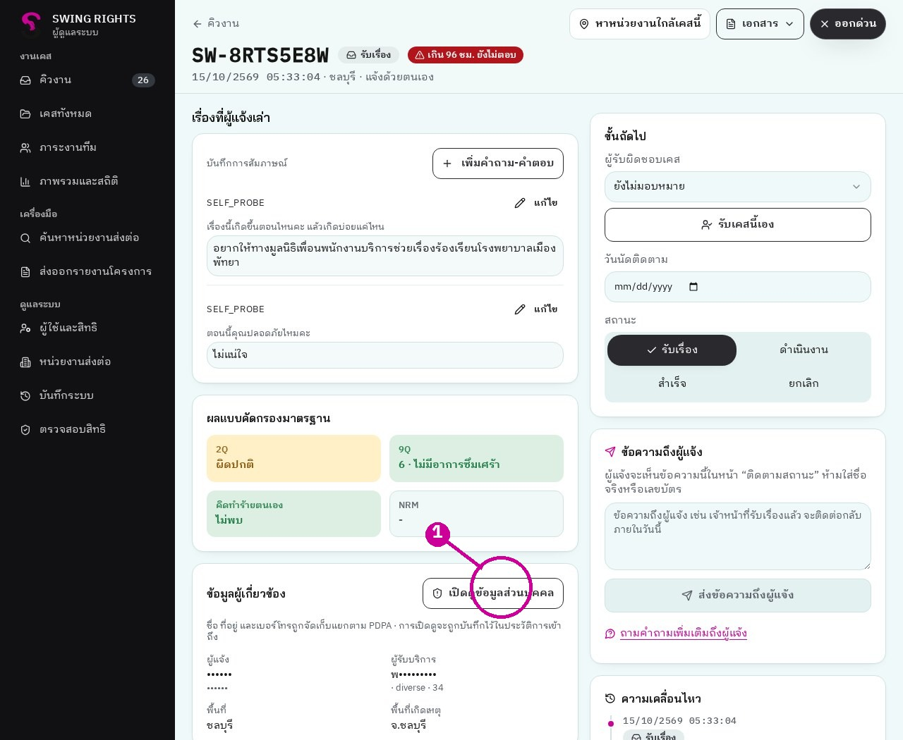
หน้า: เปิดดูข้อมูลส่วนบุคคล · 1280px · ถ่าย 20 ตุลาคม 2569 (20 ตุลาคม 2026)
URL: https://swingrights.app/admin/case/399cce68-782d-4d03-a023-bc72d15d2a52ขั้นที่ 1: ก่อนเปิดข้อมูลส่วนบุคคล ตรวจบทบาทและความจำเป็น
- RLS คือกฎสิทธิ์ที่บังคับในที่เก็บข้อมูล ไม่ใช่แค่ซ่อนปุ่ม; cases ให้เจ้าหน้าที่ active อ่าน; caseworker อัปเดตเคสตน; manager/admin ตาม can_manage
- case_pii ปฏิเสธการอ่านตรง และใช้ get_case_pii ตรวจสิทธิ์ผู้จัดการหรือผู้แก้ไขเคสก่อนอ่านพร้อมบันทึก
- viewer อ่านอย่างเดียวไม่ได้หมายความว่าอ่านข้อมูลส่วนบุคคลได้ทุกส่วน [ต้องยืนยัน] ตารางสิทธิ์ครบทุกคำสั่งและทุกบทบาทจากการทดสอบที่อนุญาต
หลักฐาน: pg_policies 20/10/2026; get_case_pii migration:35-49
SWING RIGHTS · เล่ม 3
6. ที่เก็บเสียง รูป และลิงก์ชั่วคราว
หน้า: รายละเอียดเคส · 1280px · ถ่าย 20 ตุลาคม 2569 (20 ตุลาคม 2026)
URL: https://swingrights.app/admin/case/399cce68-782d-4d03-a023-bc72d15d2a52ขั้นที่ 1: เปิดหลักฐานเฉพาะไฟล์ที่จำเป็น ไม่เก็บลิงก์เพื่อใช้ถาวร
- ที่เก็บไฟล์ชื่อ case-audio และ case-photos เป็น private ทั้งคู่ตามฐานข้อมูล; private ไม่ใช่ไม่มีใครเข้าถึง ต้องดูสิทธิ์และลิงก์ด้วย
- case-audio จำกัด 25 MiB และชนิดเสียงตามรายการ; case-photos ไม่มีเพดานและชนิดที่ bucket แต่ช่องอัปโหลดสาธารณะตรวจรูปสูงสุด 10 MiB
- ลิงก์ /track 5 นาที; เสียงเดี่ยวเจ้าหน้าที่ 5 นาที; ชุดหลักฐาน 10 นาทีตามซอร์ส [ต้องยืนยัน] ทุกช่องทางอัปโหลดและการบังคับจริง
หลักฐาน: storage.buckets; upload-case-media/index.ts:10-46; CaseDetail.tsx:231,247
SWING RIGHTS · เล่ม 3
7. งานที่ทำตามเวลาและผลการรัน
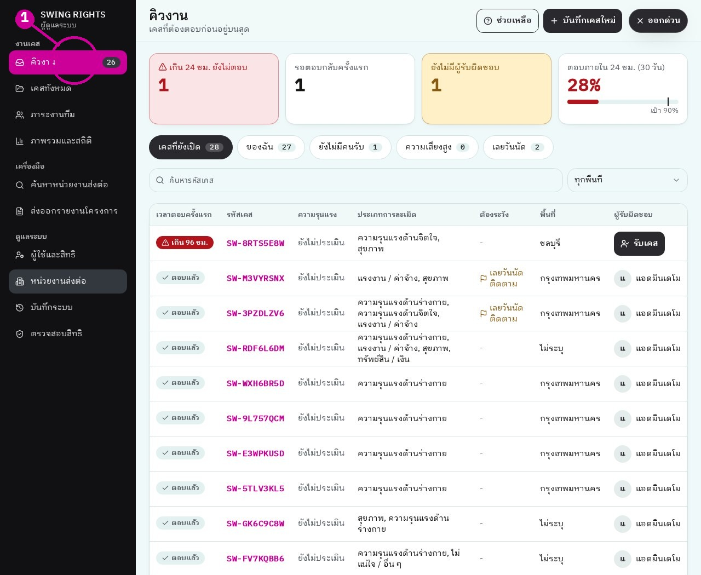
หน้า: queue · 1280px · ถ่าย 20 ตุลาคม 2569 (20 ตุลาคม 2026)
URL: https://swingrights.app/adminขั้นที่ 1: ดูคิวค้างเพื่อประเมินผล ไม่ถือว่าตารางเวลาเท่ากับงานสำเร็จ
- cron คืองานที่ระบบเรียกตามเวลาที่กำหนด: sla-warning-hourly ทุกชั่วโมงนาที 0; swing-model-auto-update ทุกชั่วโมงนาที 15 ทั้งคู่ active
- โค้ดแจ้ง SLA และส่งเรื่องขึ้น; โค้ดโมเดลสร้างแนวทางเวอร์ชันใหม่และอาจเปิดใช้อัตโนมัติ
- [ต้องยืนยัน] เวลาของงานล่าสุด ผลสำเร็จ ผู้รับผิดชอบ และวิธีหยุดจากหน้าจัดการ Lovable ห้ามคัดลอกคำสั่งที่มี token ลงคู่มือ
หลักฐาน: cron.job SELECT; notify-case/index.ts; train-swing-model/index.ts
SWING RIGHTS · เล่ม 3
8. บันทึกการเข้าถึงและความครบถ้วน
หน้า: บันทึกกิจกรรม · 1280px · ถ่าย 20 ตุลาคม 2569 (20 ตุลาคม 2026)
URL: https://swingrights.app/admin/systemขั้นที่ 1: เลือก “เปิดดูเคส” หรือ “ส่งออก/พิมพ์” เพื่อจำกัดรายการ
- มีบันทึกเปิดข้อมูล ส่งออก เปลี่ยนเคส และ AI แต่ต้องตรวจว่าทุกเส้นทางเรียกบันทึก ไม่สรุปว่าครอบคลุมทุกการอ่าน
- กิจกรรมเผยให้เห็นรหัส เวลา และผู้ทำรายการ ชื่อปิดบังบางจุด ข้อมูลในบันทึกเองต้องคุ้มครอง
- งานถ่ายภาพอาจเพิ่มบันทึกการเข้าชมและเข้าสู่ระบบตามการทำงานปกติ ไม่ได้เขียนข้อมูลธุรกิจหรือปรับตั้งค่าด้วยตนเอง
หลักฐาน: case_access_log; case_exports; case_audit; AdminSystem.tsx
SWING RIGHTS · เล่ม 3
9. อะไรลดออกก่อนส่ง AI
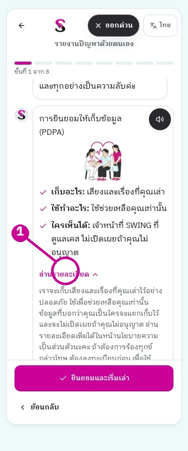
หน้า: รายละเอียดความยินยอม · 375px · ถ่าย 20 ตุลาคม 2569 (20 ตุลาคม 2026)
URL: https://swingrights.app/reportขั้นที่ 1: อ่านคำอธิบาย AI ก่อนขอความยินยอม
- ตัวช่วย scrubText แทนรูปแบบอีเมล เลขยาว เบอร์ URL และบัญชีบางรูปแบบ; maskName แทนชื่อที่ทราบ ไม่รับประกันตัดข้อมูลทางอ้อมครบ
- เสียงอาจมีชื่อและข้อมูลอ่อนไหวที่ผู้พูดกล่าว แม้ไม่ได้แนบชื่อเป็นช่องแยก การเตือนในหน้าเว็บไม่เท่ากับลบเสียง
- [ต้องยืนยัน] ข้อมูลทุกชุดของแต่ละฟังก์ชัน ผู้ให้บริการ การเก็บรักษา การส่งข้ามประเทศ และการใช้ข้อมูลปลายทางฝึกโมเดล
หลักฐาน: supabase/functions/_shared/guard.ts:48-69; piiGuard.tsx; transcribe-audio/index.ts
SWING RIGHTS · เล่ม 3
10. ความยินยอม AI ที่ต้องตรวจเป็นพิเศษ
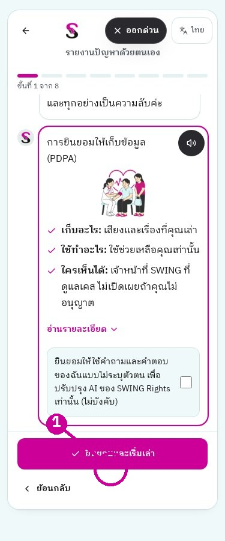
หน้า: report · 375px · ถ่าย 20 ตุลาคม 2569 (20 ตุลาคม 2026)
URL: https://swingrights.app/reportขั้นที่ 1: แยกตัวเลือกปรับปรุง AI ออกจากการยินยอมช่วยเหลือ
- ซอร์สให้ trainConsent เริ่ม false และส่ง train_consent ไป followup-question ตามค่าที่เลือก
- แต่ payload submit ใน SelfReport.tsx กำหนด consent_ai: true คงที่ จึงต้องตรวจความหมายและการใช้ฟิลด์นี้ก่อนรับรองว่าบันทึกความยินยอมตรงทุกจุด
- พบความต่างนี้จากโค้ด ไม่แก้ในงานคู่มือ [ต้องยืนยัน] สิ่งที่เก็บจริงและเงื่อนไขเลือกเคสฝึกกับผู้รับผิดชอบก่อนใช้ข้อมูลจริง
หลักฐาน: SelfReport.tsx:310,340,666,722; train-swing-model/index.ts
SWING RIGHTS · เล่ม 3
11. ลบ เก็บรักษา และสำรอง
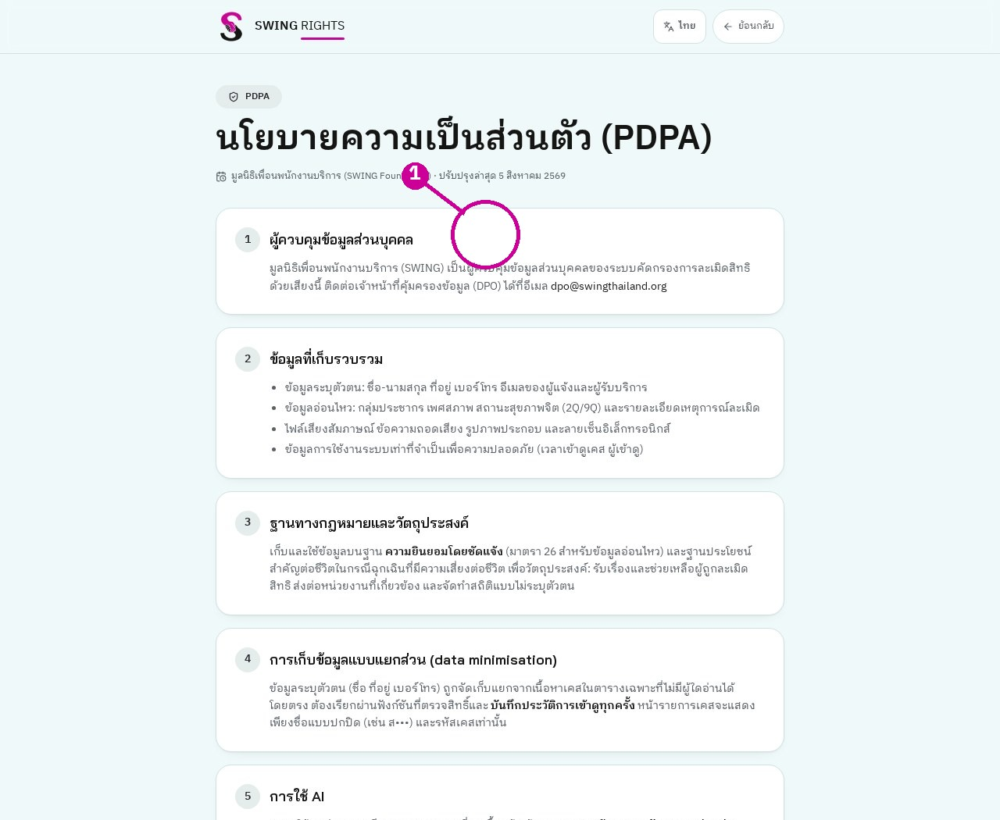
หน้า: privacy · 1280px · ถ่าย 20 ตุลาคม 2569 (20 ตุลาคม 2026)
URL: https://swingrights.app/privacyขั้นที่ 1: อ่านนโยบายแล้วตรวจว่ามีอายุเก็บและผู้รับผิดชอบชัดเจนหรือไม่
- soft delete คือทำเครื่องหมายลบ เช่น deleted_at ไม่ใช่ลบถาวรจากข้อมูล สื่อ ประวัติ หรือสำรองทั้งหมด
- มี purge_unlinked_training สำหรับตัวอย่างที่ยังไม่เชื่อมเคสเกิน 30 วันในซอร์ส แต่ [ต้องยืนยัน] ว่าถูกเรียกตามเวลา ไม่ใช้เป็นอายุเก็บทุกข้อมูล
- [ต้องยืนยัน] อายุเก็บแต่ละประเภท รอบสำรอง จุดกู้คืน เวลาที่กู้ได้ ผู้มีสิทธิ์ และขั้นตอนพิสูจน์การลบ ไม่กล่าวว่า Lovable สำรองอัตโนมัติโดยไม่มีผลตรวจ
หลักฐาน: deleted_at schema; migration 20260925050340:41-43; localCases.ts
SWING RIGHTS · เล่ม 3
12. ความเสี่ยงสาธารณะและอุปกรณ์
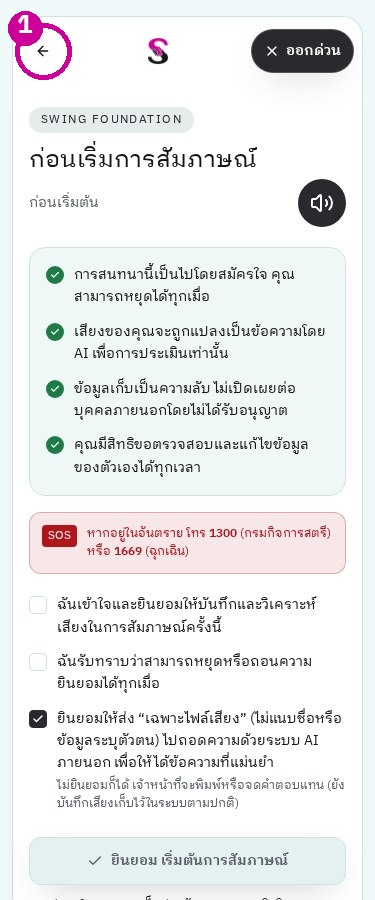
หน้า: intake · 375px · ถ่าย 20 ตุลาคม 2569 (20 ตุลาคม 2026)
URL: https://swingrights.app/intakeขั้นที่ 1: ตรวจหน้า /intake ที่เปิดได้โดยยังไม่เข้าสู่ระบบ
- ความเสี่ยงระดับปานกลาง: /intake ไม่ถูกห่อ ProtectedRoute อาจถูกใช้เริ่มข้อมูลไม่เหมาะสม ต้องตรวจคำสั่งส่งแยกก่อนยืนยันว่าใครก็สร้างเคสได้
- ระดับปานกลาง: rate limit คือจำกัดเรียกถี่ แต่ตัวช่วย guard อนุญาตเมื่อคำสั่งตรวจผิดพลาด เสี่ยงต้นทุนและการใช้งานผิดวัตถุประสงค์
- ระดับสูงเมื่อเครื่องใช้ร่วม: เรื่องและไฟล์อาจค้างในอุปกรณ์จากแบบร่าง ต้องกำหนดวิธีดูแลเครื่องและความเสี่ยงจากออกด่วน
หลักฐาน: _shared/guard.ts:14-36; App.tsx:55; localCases.ts:2-9
SWING RIGHTS · เล่ม 3
13. ความเสี่ยงหน่วยงานและขนาดรูป
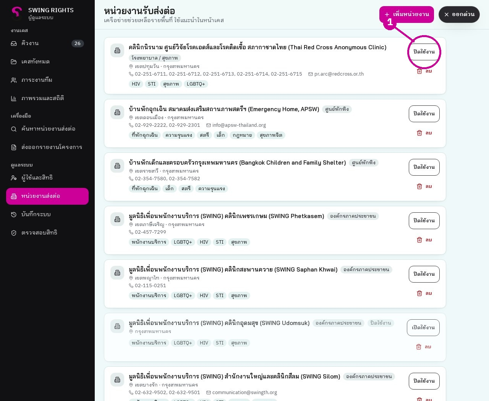
หน้า: partners · 1280px · ถ่าย 20 ตุลาคม 2569 (20 ตุลาคม 2026)
URL: https://swingrights.app/admin/partnersขั้นที่ 1: ตรวจข้อมูลทุกคอลัมน์ก่อนเปิดรายชื่อ active ให้สาธารณะ
- ระดับปานกลาง: นโยบายอนุญาตผู้ไม่ล็อกอินอ่าน referral_partners active ไม่จำกัดคอลัมน์ด้วย policy ต้องตรวจ GRANT และคอลัมน์ notes ว่ามีข้อมูลภายในหรือไม่
- ระดับปานกลาง: bucket รูปไม่จำกัดขนาด/ชนิด แต่ช่องอัปโหลดสาธารณะมี 10 MiB จึงไม่ใช่ไม่มีการจำกัดทุกช่องทาง ผลกระทบพื้นที่โตถ้ามีช่องอื่นไม่ตรวจ
- ระดับสูงด้านการปฏิบัติงาน: ไม่พบค่าลับ LINE/อีเมลแจ้งเตือน เจ้าหน้าที่อาจไม่เห็นเคสด่วนถ้าไม่เปิดระบบ [ต้องยืนยัน] ช่องทางสำรองและเวรรับแจ้ง
หลักฐาน: pg_policies referral_partners; storage.buckets; upload-case-media; secrets names
SWING RIGHTS · เล่ม 3
14. ความเสี่ยงโมเดลและความต่างเวอร์ชัน
หน้า: โมเดล SWING Rights · 1280px · ถ่าย 20 ตุลาคม 2569 (20 ตุลาคม 2026)
URL: https://swingrights.app/admin/systemขั้นที่ 1: ตรวจเวอร์ชัน active และผู้ตรวจอนุมัติก่อนใช้งานจริง
- ระดับสูงด้านข้อมูล: โค้ดสร้าง/เปิดแนวทางใหม่ได้อัตโนมัติ ต้องกำหนดผู้ตรวจ ความยินยอม และเกณฑ์ความปลอดภัย ไม่ตีความคำว่า “ภายในหน่วยงาน” ว่าไม่ส่งภายนอก
- ระดับสูงด้านเข้าถึง: TOTP มีในซอร์สแต่ไม่มีในภาพเว็บที่ตรวจ ต้องยืนยันเวอร์ชันเผยแพร่และการบังคับ ไม่ถือว่า MFA ปกป้องทุกหน้าแล้ว
- จัดลำดับนี้เป็นข้อประเมินเบื้องต้น ไม่ใช่ผลตรวจความปลอดภัยครบระบบ และไม่ได้แก้ความเสี่ยงใดในงานนี้
หลักฐาน: train-swing-model/index.ts; MySettings.tsx:80-127; ภาพ totp_1280
SWING RIGHTS · เล่ม 3
15. กฎหมาย 1/5, ข้อมูลอ่อนไหวและยินยอม
หน้า: report · 375px · ถ่าย 20 ตุลาคม 2569 (20 ตุลาคม 2026)
URL: https://swingrights.app/reportขั้นที่ 1: อ่านความยินยอมรายงานและถามว่าผู้แจ้งเข้าใจก่อนกด
- ร่างเพื่อผู้เชี่ยวชาญตรวจ ไม่ใช่ความเห็นทางกฎหมาย มาตรา 26 อาจเกี่ยวข้องกับข้อมูลสุขภาพ พฤติกรรมทางเพศ ประวัติอาชญากรรม และข้อมูลเชื้อชาติ/เผ่าพันธุ์ หากมีจริงในเรื่องหรือหลักฐาน
- อัตลักษณ์ LGBTQ+ อาชีพ สัญชาติ หรือสถานะผู้ย้ายถิ่นไม่ใช่ทุกกรณีเข้าหมวดเดียวกันโดยอัตโนมัติ แต่ข้อมูลร่วมกันอาจเสี่ยงสูง ต้องประเมินตามสิ่งที่เก็บจริง
- ระบบมีจุดยินยอมหน้าแรก /report และ /intake รวมตัวเลือก AI แต่ต้องให้ผู้เชี่ยวชาญตรวจความชัดแจ้ง ฐานกฎหมาย ความจำเป็น การถอน และหลักฐานที่เก็บ ไม่รับรองว่าปุ่มยินยอมทำให้ถูกกฎหมายทุกเรื่อง
หลักฐาน: PDPA พ.ศ.2562 ม.19,26; MDES https://www.mdes.go.th/law/detail/3577-Personal-Data-Protection-Act-B-E--2562--2019-
SWING RIGHTS · เล่ม 3
16. กฎหมาย 2/5, คำขอสิทธิของเจ้าของข้อมูล
หน้า: privacy · 1280px · ถ่าย 20 ตุลาคม 2569 (20 ตุลาคม 2026)
URL: https://swingrights.app/privacyขั้นที่ 1: เปิดนโยบายเพื่อดูช่องทางติดต่อ แล้วให้เจ้าหน้าที่รับคำขอ
- ร่างให้ตรวจ: สิทธิถอนความยินยอมตาม ม.19; ขอเข้าถึง/สำเนา ม.30; โอนข้อมูล ม.31; คัดค้าน ม.32; ลบ ม.33; ระงับ ม.34; ข้อมูลถูกต้อง ม.35 และขอแก้ ม.36 ทั้งหมดมีเงื่อนไขตามกฎหมาย
- ขั้นที่ 1 รับคำขอผ่านช่องทางองค์กร [ต้องยืนยัน] ช่องทางที่ใช้งานได้และแบบรับเรื่อง เพราะไม่พบหน้าคำขอสิทธิครบชุด
- ขั้นที่ 2 ยืนยันตัวบุคคลเท่าที่จำเป็นโดยไม่ขอเอกสารเกินเหตุ; ขั้นที่ 3 ผู้รับผิดชอบตรวจขอบเขตและข้อยกเว้น; ขั้นที่ 4 ตอบและบันทึกผล ไม่ส่ง PII ผ่านแชตส่วนตัว [ต้องยืนยัน] ภาพทุกขั้นและผู้รับผิดชอบ คำขอเข้าถึง ม.30 ต้องไม่ล่าช้าและไม่เกิน 30 วันตามเงื่อนไข ไม่ใช้กำหนดเดียวกันกับทุกสิทธิ
หลักฐาน: PDPA ม.19,30-36; src/components/PrivacyContent.tsx; ขั้นตอนองค์กรยังต้องอนุมัติ
SWING RIGHTS · เล่ม 3
17. กฎหมาย 3/5, เมื่อข้อมูลรั่ว
หน้า: บันทึกกิจกรรม · 1280px · ถ่าย 20 ตุลาคม 2569 (20 ตุลาคม 2026)
URL: https://swingrights.app/admin/systemขั้นที่ 1: เปิดบันทึกกิจกรรมเพื่อเก็บเวลาและขอบเขตเหตุอย่างจำกัด
- ร่างให้ตรวจ: แจ้งผู้รับผิดชอบข้อมูล ผู้บริหาร ฝ่ายดูแลระบบ และผู้เชี่ยวชาญกฎหมายทันที [ต้องยืนยัน] รายชื่อและช่องทางเวร ไม่เดาชื่อผู้รับผิดชอบ
- มาตรา 37(4): แจ้งสำนักงานโดยไม่ชักช้าและภายใน 72 ชั่วโมงนับแต่ทราบเหตุเมื่อเป็นไปได้ เว้นแต่ไม่มีความเสี่ยงต่อสิทธิและเสรีภาพ; หากเสี่ยงสูงต้องแจ้งเจ้าของข้อมูลพร้อมแนวทางเยียวยาตามหลักเกณฑ์ ไม่ใช่รอครบ 72 ชั่วโมงจึงเริ่มทำ
- บันทึกเวลาทราบเหตุ ผู้ตรวจ ระบบ/ข้อมูล/คนที่ได้รับผล มาตรการจำกัดเหตุ หลักฐาน การประเมินความเสี่ยง และการแจ้งทุกครั้ง เก็บให้ปลอดภัย [ต้องยืนยัน] แบบบันทึก ช่องทางแจ้งสำนักงาน และภาพจากขั้นตอนจริง
หลักฐาน: PDPA ม.37(4); ประกาศ PDPC https://www.pdpc.or.th/2405/; ไม่ใช่คำวินิจฉัยกฎหมาย
SWING RIGHTS · เล่ม 3
18. กฎหมาย 4/5, งานบริการ สาร และคำขอรัฐ
หน้า: เปิดดูข้อมูลส่วนบุคคล · 1280px · ถ่าย 20 ตุลาคม 2569 (20 ตุลาคม 2026)
URL: https://swingrights.app/admin/case/399cce68-782d-4d03-a023-bc72d15d2a52ขั้นที่ 1: ก่อนเปิดหรือส่งข้อมูล ให้ตรวจความจำเป็นและอำนาจตามคำขอ
- ร่างให้ตรวจ: อย่าสรุปว่าอาชีพหรือผู้ใช้สารทุกกรณีมีความผิด ข้อเท็จจริง การกระทำ และกฎหมายที่ใช้ต้องประเมินเป็นรายกรณี เรื่องเล่า เสียง พิกัด และข้อมูลสุขภาพอาจเพิ่มความเสี่ยงต่อผู้แจ้ง
- เมื่อเจ้าหน้าที่รัฐขอข้อมูล: ขั้นที่ 1 รับคำขอและหลักฐานอำนาจ; ขั้นที่ 2 ให้ผู้มีอำนาจองค์กรกับผู้เชี่ยวชาญตรวจฐานกฎหมายและขอบเขต; ขั้นที่ 3 เปิดเผยเท่าที่จำเป็นผ่านช่องทางอนุมัติ; ขั้นที่ 4 บันทึกผู้ขอ ผู้อนุมัติ ข้อมูล เวลา และเหตุผล
- [ต้องยืนยัน] นโยบายองค์กร ผู้อนุมัติ แบบรับคำขอ และภาพกระบวนการ ไม่มีหน้าปุ่มที่พิสูจน์ว่ารองรับครบ ห้ามเปิดข้อมูลทันทีเพียงเพราะมีผู้ขอ
หลักฐาน: PDPA ม.24,26,27 และกฎหมายที่เกี่ยวกับคำขอ ต้องตรวจรายกรณี; get_case_pii
SWING RIGHTS · เล่ม 3
19. กฎหมาย 5/5, กฎใช้งานและก่อนรับมอบ
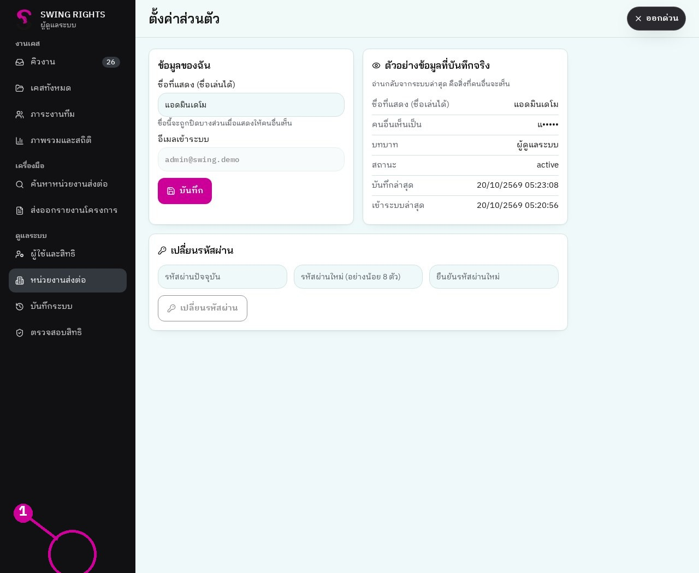
หน้า: settings · 1280px · ถ่าย 20 ตุลาคม 2569 (20 ตุลาคม 2026)
URL: https://swingrights.app/admin/settingsขั้นที่ 1: จบงานแล้วกด “ออกจากระบบ” ทุกครั้ง
- ร่างกฎให้อนุมัติ: ดูเท่าที่จำเป็น ห้ามถ่ายภาพหน้าจอเคสจริง ห้ามส่งข้อมูลผ่านแชตส่วนตัว ห้ามแชร์รหัสเคส/ลิงก์ส่งต่อ ใช้บัญชีรายคน และไม่เก็บรหัสผ่านร่วม
- อุปกรณ์ใช้ร่วมต้องตรวจแบบร่างและการออกจากระบบ ไม่รับรองว่าออกด่วนลบทุกสำเนา ตั้ง TOTP เมื่อพร้อมและทดสอบการกู้เข้าบัญชีอย่างปลอดภัย
- ส่วนกฎหมายทั้ง 5 หน้านี้เป็นร่าง ยังไม่ใช่ความเห็นทางกฎหมาย ต้องให้ผู้เชี่ยวชาญตรวจก่อนใช้จริง โดยเฉพาะช่องทางคำขอสิทธิ ผู้รับแจ้งเหตุ ฐานประมวลผล อายุเก็บ และการเปิดเผยตามคำขอรัฐ
หลักฐาน: PDPA พ.ศ.2562; นโยบายองค์กรยังต้องอนุมัติ; src/hooks/useIdleLogout.ts